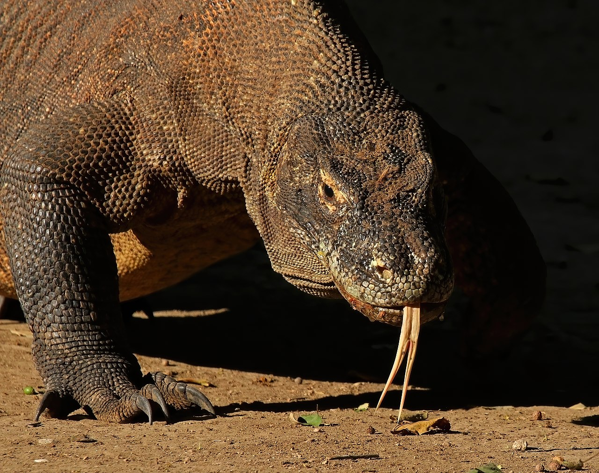

El dragón de komodo
El dragón de Komodo (Varanus komodoensis), también llamado monstruo de Komodo y varano de Komodo, es una
especie de
saurópsido de la familia de los varánidos, endémico de algunas islas de Indonesia central.2 Es el
lagarto de mayor
tamaño del mundo, con una longitud media de dos a tres metros y un peso de unos 70 kg.3 A consecuencia
de su tamaño,
son los superpredadores de los ecosistemas en los que viven.4 A pesar de que estos lagartos se
alimentan principalmente
de carroña, también cazan y tienden emboscadas a sus presas, que incluyen invertebrados, aves y
mamíferos.
La primera vez que científicos occidentales estudiaron los dragones de Komodo fue en 1910. Su
excepcional tamaño y su
reputación de animal temible los convierte en uno de los animales más populares de los zoológicos. En
estado salvaje son
una especie amenazada; su ámbito de distribución se ha reducido debido a las actividades humanas y están
catalogados
como en peligro de extinción en la Lista Roja de la UICN.1 Están protegidos por la ley indonesia, y un
parque nacional,
el Parque Nacional de Komodo, fue fundado en 1980 para contribuir a su conservación.
La época de apareamiento comienza entre julio y agosto y la puesta de huevos en septiembre. Depositan
aproximadamente
veinte huevos en nidos de megápodos abandonados, y los incuban durante siete u ocho meses, hasta su
eclosión en abril,
cuando los insectos son más abundantes. Los jóvenes son vulnerables, por lo que suelen morar en árboles,
a salvo de
depredadores y adultos caníbales. Tardan aproximadamente entre tres y cinco años en madurar, y pueden
vivir hasta unos
cincuenta años. Estos lagartos se encuentran entre los pocos vertebrados con capacidad de reproducción
por
partenogénesis, proceso por el que las hembras pueden poner huevos viables en situaciones de ausencia de
machos.5
Los nativos de la isla de Komodo se refieren a este animal como ora, buaya darat (cocodrilo de tierra) o
biawak raksasa
(monitor gigante).67
No tiene un sentido del oído particularmente agudo, a pesar de sus visibles conductos
auditivos, solo es capaz de oír
sonidos entre 400 y 2000 hercios.715 Es capaz de ver hasta una distancia de 300 metros, pero dado que
sus retinas solo
contienen conos, se cree que tiene una pobre visión nocturna.
Es capaz de percibir el color, pero tiene una pobre discriminación visual de objetos inmóviles.16
Los dragones de Komodo son carnívoros. Aunque se alimentan fundamentalmente de carroña,10 también tienden emboscadas a presas vivas acercándose sigilosamente. Cuando una presa adecuada llega cerca de su lugar de emboscada, la ataca rápidamente lanzándose sobre el vientre o el cuello del animal.13 Es capaz de localizar sus presas utilizando su penetrante sentido del olfato, que puede detectar a un animal muerto o agonizante de una distancia de hasta 9,5 kilómetros.13 Se han documentado casos de dragones de Komodo derribando cerdos grandes y ciervos con su fuerte cola.23 Es frecuente que las presas grandes sean devoradas por varios dragones, o que, si la presa consigue inicialmente escapar (algunos estudios indican un 30 % de fracasos), pero queda herida, sea cobrada finalmente por otro u otros dragones.
